Hardware Description
Interfacing STM32F411 BlackPill Development Board.
The STM32F411 BlackPill I/O Carrier is designed to expand the capabilities of the BlackPill STM32F411 development board. It provides robust I/O functionality, reliable power separation, and versatile communication options, making it suitable for embedded system prototyping, motor control evaluation, and development tasks.
{kind=link}
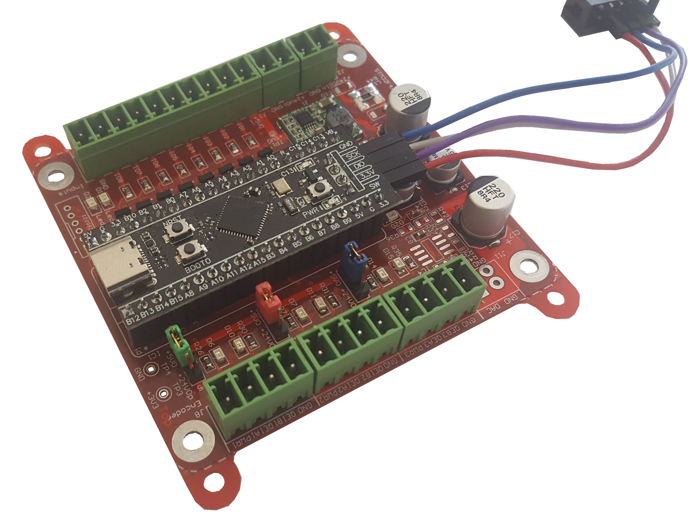
Scope of this documentation
This datasheet describes the features and functionality of the STM32F4xx BlackPill I/O Carrier board.
Typical applications
Learning and educational purposes
Rapid prototyping and hardware development
Encoder testing and high-speed signal evaluation
Component Layout
The following images provide a visual guide to the functional sections of the BlackPill I/O Carrier, highlighting the location of connectors, protection circuits, and expansion headers.
Top Side Functions

Figure 2: Functionality BlackPill I/O carrier I
The top side hosts the primary user interfaces, including the BlackPill module headers, the 24V terminal blocks for evaluation, and the status LEDs for the digital inputs.
Bottom Side Functions
{kind=link}
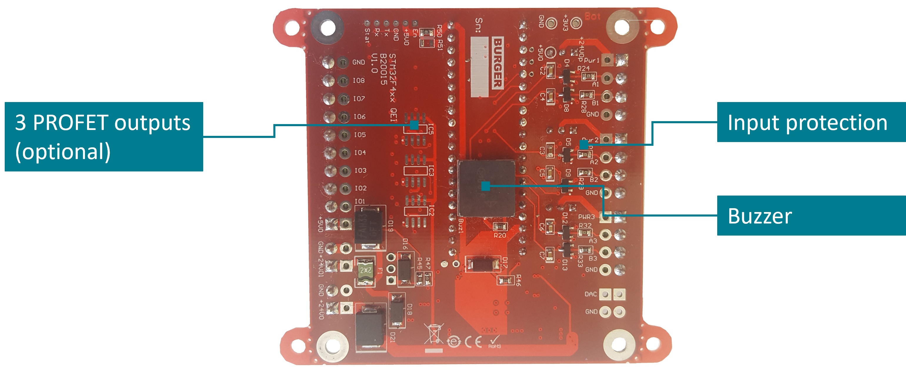
Figure 3: Functionality BlackPill I/O carrier I
The bottom side contains several SMD components, including the voltage regulation traces and the optional solder bridges (R50/R51) used to configure the power supply for the serial interface.
Block diagram BlackPill I/O carrier
{kind=link}
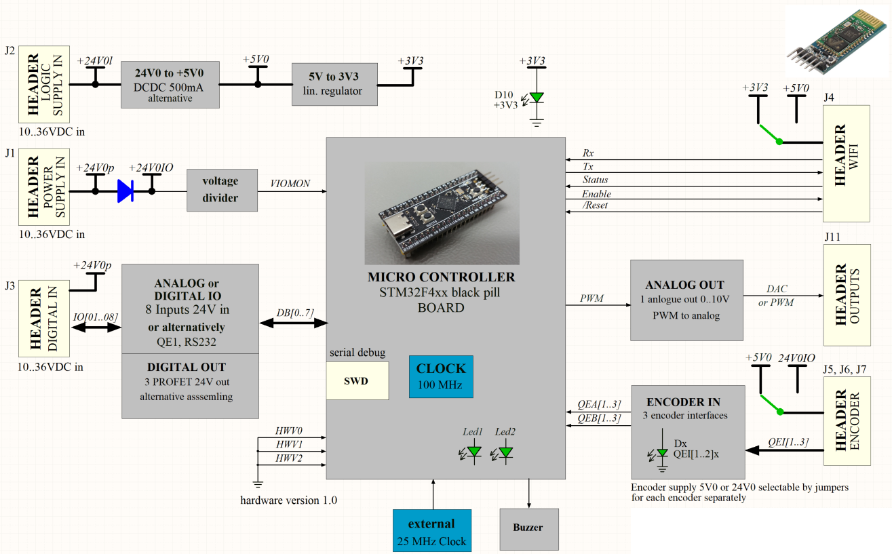
Figure 4: Block diagram BlackPill I/O carrier
Technical Summary
Input Voltage: 24 VDC nominal.
Power Domains: Separate power domains for logic and PROFET outputs for improved safety and noise isolation during development.
3x Encoder Interfaces: A, B, and Index inputs with selectable supply (5V/24V).
3x PROFET Outputs: Optional 24V high-side switches for actuator prototyping.
1x Analog/PWM-Output: 0–10V voltage range for signal evaluation.
User Feedback: 2x Status LEDs and 1x integrated Buzzer.
Hardware Customization and Assembly
The BlackPill I/O Carrier is designed with flexibility in mind to support various development requirements. Several I/O configurations can be modified by adjusting the PCB assembly, allowing for alternative pin mappings or functional variants that may differ from the default schematic representation.
The board utilizes standard SMD components to balance compact design with ease of maintenance. The smallest components used on the layout have a 0603 footprint (1608 Metric). These parts are large enough to be soldered by hand with moderate soldering skills and basic equipment, making the board accessible for manual prototyping, repairs, or custom modifications during the evaluation phase.
Hardware Design
Power Supply and Protection
24 VDC Logic Supply
The primary logic supply accepts 9-24 VDC. It features a reverse polarity diode, TVS transient protection, and a 0.2A PTC fuse. Regulation is provided by high-efficiency Recom converters (ROF-78E5.0 or R-785.0).
{kind=link}
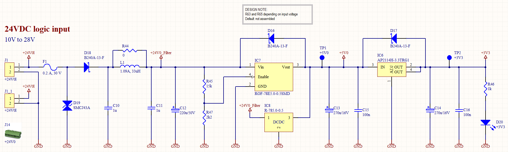
Figure 5: 24 VDC logic power supply
24 VDC IO Supply & Monitoring
A separate 24 VDC input stage feeds the PROFET power domain.
{kind=link}
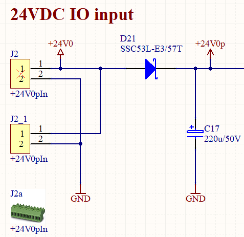
Figure 6: 24 VDC I/O power supply
The board includes active voltage monitoring to ensure the 24V IO domain is within safe limits for evaluation.
{kind=link}
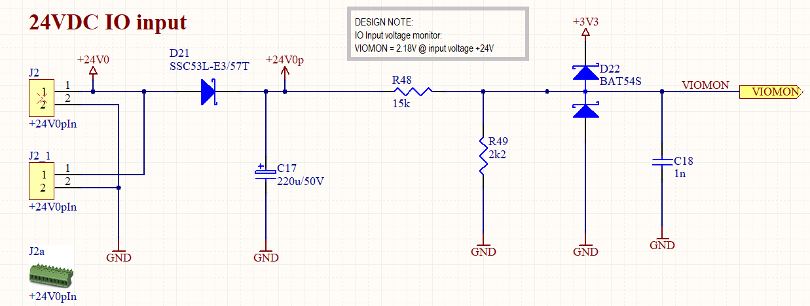
Figure 7: Optional power supply monitoring to analogue input
5V-Only Operation and Power Configuration
With specific component assembly, the BlackPill I/O Carrier can be operated using only a 5V power supply. To enable this mode, the corresponding solder bridges must be installed on the PCB to bypass the standard 24V regulation stages.
This configuration is particularly useful for development environments where a 24V industrial supply is not available, though it may limit the functionality of the 24V-level I/O and PROFET outputs.
Digital and Analog Inputs
Inputs feature a 22k series resistor and BAT54S clamping diodes for over- and undervoltage protection. In addition a 1nF filter capacitor can optionally be assembled.
{kind=link}
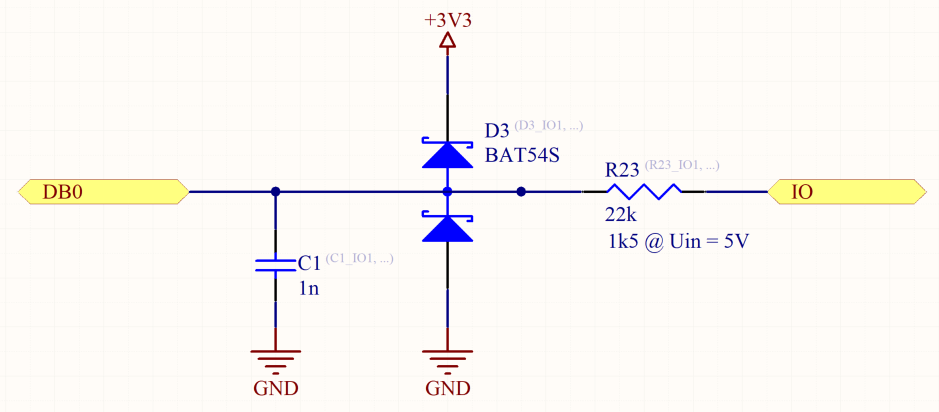
Figure 8: Hardware design of a digital input
Input Current Calculation: At a nominal 24VDC input, the current is limited:
Encoder Interfaces
The board supports three encoders inputs with status LEDs for each QEA/QEB channel. Voltage selection (5V/24V) is handled via jumpers for each encoder separately. All encoder inputs are protected against over- and undervoltage. The QEIAi, QEIBi inputs are 24V-tolerant digital interfaces designed to bridge high-voltage signals with the 3.3V logic level of the STM32 MCU during development. This stage is optimized for encoder phase signals, providing signal conditioning, protection, and visual feedback.
If not used as encoder, inputs can also be used as general purpose inputs.
Input Circuit Architecture
The circuit utilizes a passive conditioning network combined with active protection components:
Signal Conditioning: A series resistor R25 (12kOhm) works in conjunction with C3 (1nF) to form a hardware low-pass filter.
Overvoltage Protection: A BAT54S dual Schottky diode (D5) clamps the input voltage to the +3V3 and GND rails, protecting the MCU pin from transients.
Visual Indication: A green LED (D7) provides a local “Signal High” status, driven through a 680Ohm current-limiting resistor (R27).
Electrical Parameters
Parameter |
Typical Value |
|---|---|
Nominal Input Voltage |
24 VDC |
Input Impedance |
~12 kOhm (determined by R25) |
Hardware Filter (RC) |
tau approx. 12 us (Cut-off frequency ~13.2 kHz) |
LED Operating Current |
~1.5 - 2.0 mA @ 24V |
Logic High Threshold |
> 15 V (ensures LED visibility and logic transition) |
Technical Calculation
The total input current ($I_{in}$) at 24V is the sum of the current flowing to the MCU protection stage and the LED indicator stage:
Note
The use of the BAT54S Schottky diode is critical as it ensures the forward voltage drop ($V_f approx 0.3V$) is lower than the MCU’s internal ESD diode drop, effectively shunting current away from the processor during overvoltage events.
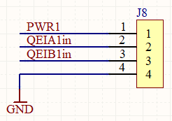
Figure 9: Pinnning termial for encoder input
{kind=link}
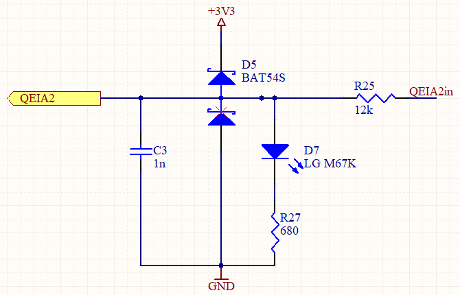
Figure 10: Hardware design of digital encoder input QEAi
Analog or PWM Output
Converts PWM signals to a 0-10V analog level, supported by a dedicated OPV supply stage.
{kind=link}
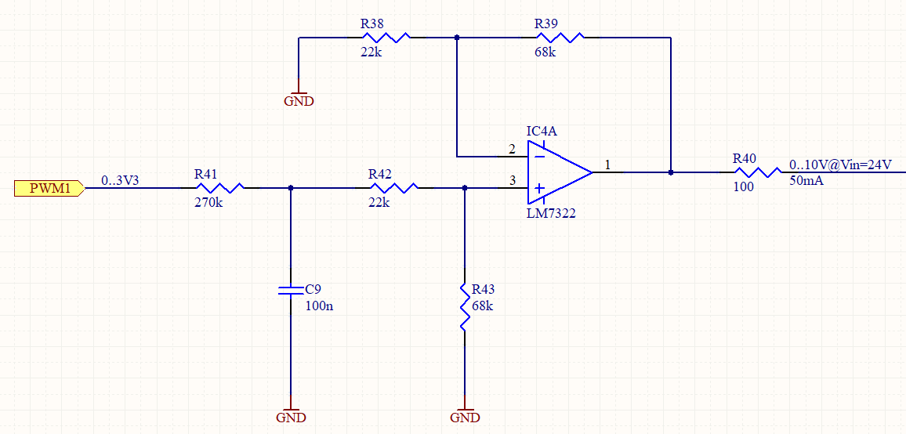
Figure 11: Hardware design analog or PWM output
The output stage is based on the LM7322 High Output Current Operational Amplifier. This circuit is designed to convert a 3.3V MCU signal into a higher-level output for testing purposes. Depending on the assembly of the input filter, the board supports two primary functional variants.
Circuit Architecture
The configuration uses a non-inverting amplifier topology with a theoretical gain ($G$) determined by the feedback network (R38, R39):
At a 3.3V input, the maximum theoretical output voltage is approx. 13.5V.
Note
The output is typically scaled to 0..10V by adjusting the PWM duty cycle or the input voltage divider (R41, R42, R43).
Functional Variants
- Variant 1: 0..10V Analog Output
Configuration: Low-pass filter (R41, C9) is populated.
Function: The 3.3V PWM signal is smoothed into a stable DC voltage.
Filter Characteristics: With R41 (270kOhm) and C9 (100nF), the settling time is optimized for stable analog evaluation of actuators or VFDs.
- Variant 2: High-Power PWM Output
Configuration: Filter capacitor C9 is omitted (left unpopulated).
Function: The LM7322 acts as a high-speed driver, amplifying the 3.3V PWM signal directly to a 24V-level (up to the supply rail) PWM signal.
Benefit: Leverages the LM7322’s high current capability to drive capacitive loads or small DC motors directly during prototyping.
Electrical Specifications
Parameter |
Value / Specification |
|---|---|
Operational Amplifier |
LM7322 (High Output Current, Rail-to-Rail) |
Output Voltage Range |
0..10V (typical) up to V_in (max) |
Max. Output Current |
50 mA (protected by R40) |
Output Protection |
R40 (100Ohm) series resistor for short-circuit current limiting. |
Input Impedance |
High impedance via R41/R42 network. |
Safety and Robustness
Short-Circuit Protection: The 100Ohm series resistor (R40) at the output terminal protects the LM7322 and the MCU from accidental shorts to ground or wiring errors.
Thermal Stability: The LM7322 is chosen for its ability to handle high peak currents during evaluation without significant thermal drift.
Signal Integrity: The voltage divider (R42, R43) ensures that the non-inverting input remains within the operational common-mode range of the amplifier.
Operational Amplifier Power Supply
{kind=link}
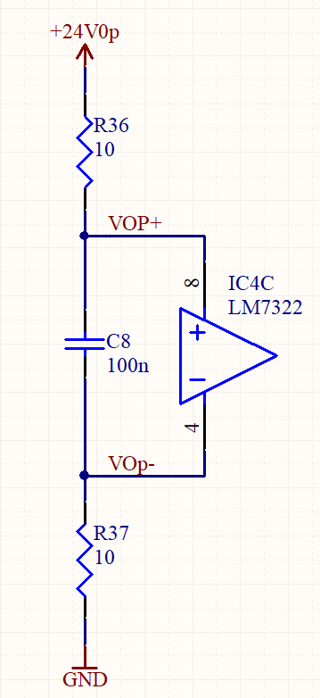
Figure 12: Power supply operation amplifier
The power supply for the LM7322 operational amplifier is specifically conditioned to ensure high signal integrity for development tasks. * Decoupling: A 100nF capacitor (C8) is placed directly across the VOP+ and VOP- pins to suppress high-frequency noise. * RC-Filtering: The supply lines include 10 Ohm resistors (R36, R37) in series with the 24V supply and Ground. This creates a low-pass filter effect together with the decoupling capacitors, protecting the OpAmp from transients on the 24V rail. This robust filtering is essential when the output stage is used in PWM mode, as it prevents switching noise from coupling back into sensitive analog sections.
Buzzer & LEDs
A Murata PKLCS1212E2000-R1 piezo ringer (70 dB) provides acoustic feedback.
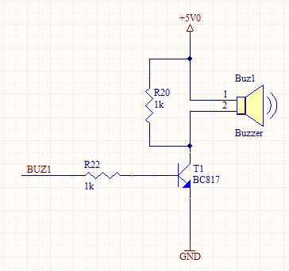
Figure 13: Hardware design piezo buzzer control
{kind=link}
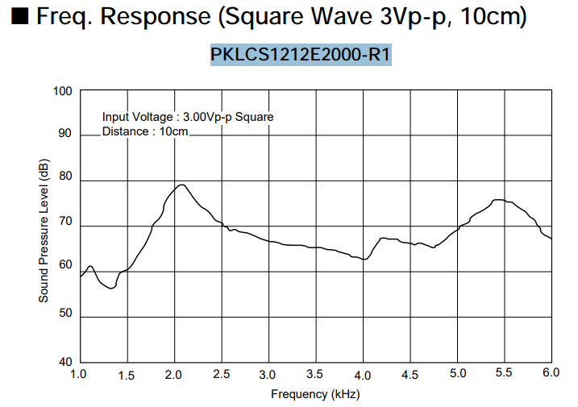
Figure 14: Frequency response piezo buzzer
Miniature Test Points (TP1, TP2)
The board features specific measurement points for the 3.3V logic rail and GND. These allow for precise Multimeter or Oscilloscope measurements without the risk of accidental shorts on high-density component pins. * 3.3V Rail (TP1): Used to verify the output of the internal voltage regulators and ensure stable power to the STM32 MCU. * GND (TP2): Provides a reliable common ground reference for all signal measurements.
Hardware Recommendation: For an evaluation setup, it is recommended to install Keystone Electronics 5003 THT miniature test points. * Type: Miniature Surface Mount / Thru-Hole Test Point. * Material: Phosphor Bronze with Silver Plate. * Benefit: These color-coded test points provide a secure “hook-on” point for probe tips, ensuring stable readings during monitoring.
Note
Monitoring the 3.3V rail is particularly important when external modules like the HC-05 are powered via the I/O Carrier to ensure the total current draw remains within the regulator’s limits.
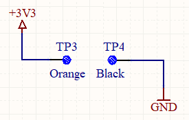 Figure 15: Hardware design test points |
Figure 16: Test point |
{kind=link}
{kind=link}
Serial Interface & Wireless Expansion
The BlackPill I/O Carrier features a dedicated serial communication header (J4) designed for easy integration of external wireless modules or telemetry hardware during prototyping.
Connector Pinout (J4)
The 6-pin interface provides standard UART signals along with additional control lines and flexible power options.
{kind=link}
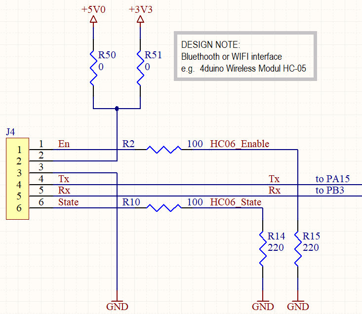
Figure 17: Hardware design serial interface
Pin Assignment:
Pin 1 (En): Digital output for module enabling/control (via R2).
Pin 2 (VCC): Configurable power supply (+5V0 or +3V3).
Pin 3 (GND): Common ground reference.
Pin 4 (Tx): UART Transmit (to PA15).
Pin 5 (Rx): UART Receive (to PB3).
Pin 6 (State): Digital input for status monitoring (via R10).
Power Configuration: The external hardware can be supplied with either +5V0 or +3V3 by populating the respective zero-ohm bridge resistors R50 or R51.
Application Example: HC-05 Bluetooth Integration
A common use case is the connection of an HC-05 RS232-Bluetooth module, enabling wireless data transmission and remote diagnostics during development.
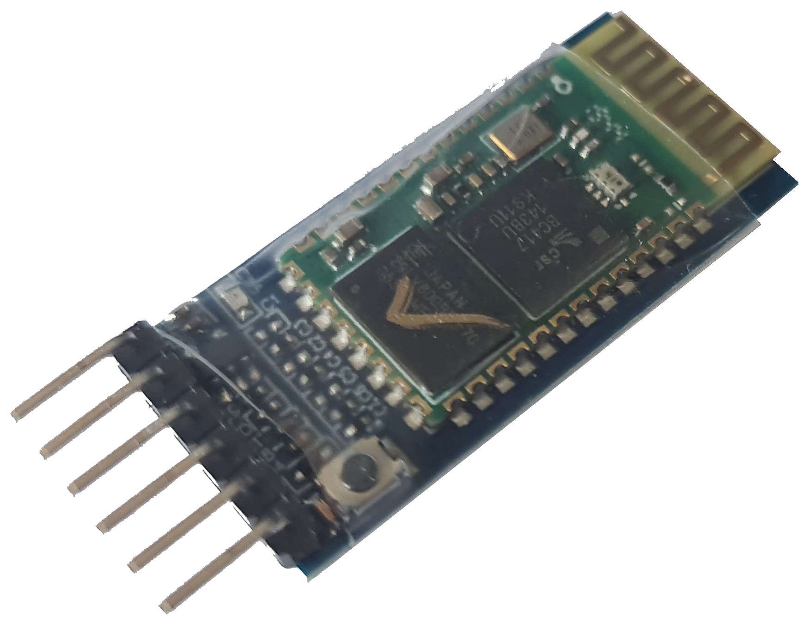 Figure 18: HC-05 Top View |
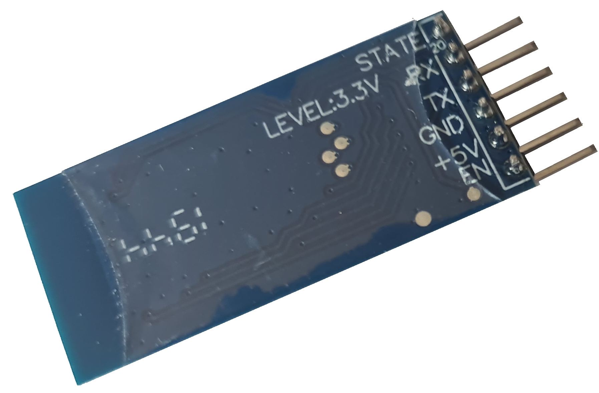 Figure 19: HC-05 Bottom View |
{kind=link}
{kind=link}
The HC-05 module can be mated directly with the interface header. This setup allows for a seamless wireless bridge between the STM32 controller and a smartphone or PC.
Mechanical Integration:
As shown in the enclosure assembly, the Bluetooth module fits comfortably alongside the main hardware within the protective case. This ensures the wireless interface remains shielded from environmental factors during evaluation.
{kind=link}
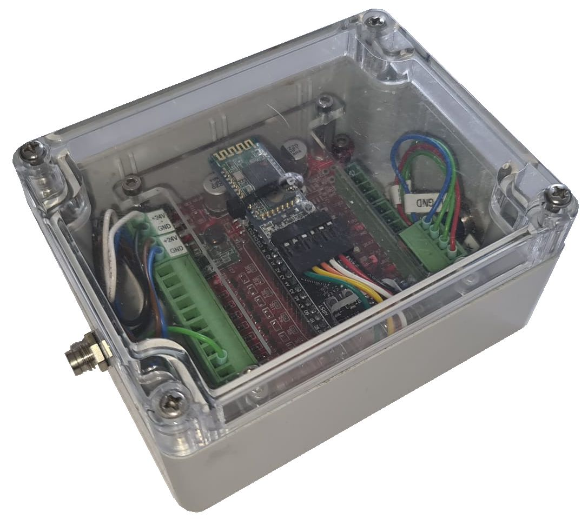
Figure 20: IP65 plastic enclosure
Programming and Debugging
The BlackPill I/O Carrier is fully optimized for In-Circuit Serial Programming (ICSP) and real-time debugging. This allows developers to flash firmware and monitor internal registers while the board is integrated into its hardware environment.
ST-Link V2 Debugger
The primary interface for development is the ST-Link V2 programmer/debugger. It connects via the USB port of a PC and interfaces with the BlackPill’s debug pins.
{kind=link}
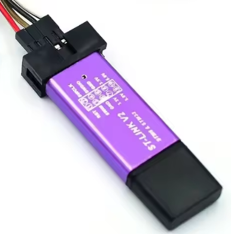
Figure 21: ST-Link V2 programmer and debugger
Key Features of the ST-Link V2:
Plug-and-Play: Supported natively by STM32CubeIDE, Keil MDK, and VS Code (Cortex-Debug).
Voltage Supply: Can provide 3.3V to the MCU during programming (max. 100mA).
Status Indication: Integrated LED for communication and power status.
In-Circuit Debugging (ICD)
The board utilizes the Serial Wire Debug (SWD) protocol, which is the standard for modern ARM Cortex-M microcontrollers. * Physical Connection: Programming is performed via the 4-pin header (GND, SWCLK, SWDIO, 3V3) found on the BlackPill module. * JTAG Compatibility: Although the STM32F411 supports full JTAG, the SWD interface is preferred here to save pins for I/O operations while maintaining full debugging features. * Live Monitoring: Developers can monitor the state of the digital inputs or the Analog/PWM output in real-time during code execution.
Flash Procedure
Connect the ST-Link V2 to the BlackPill SWD header.
Power the board either via the ST-Link (for logic-only tests) or via the 24V input (for full system testing).
Compile and Upload using your preferred IDE.
Debug by setting breakpoints to analyze signal processing or PID loop performance.
{kind=link}
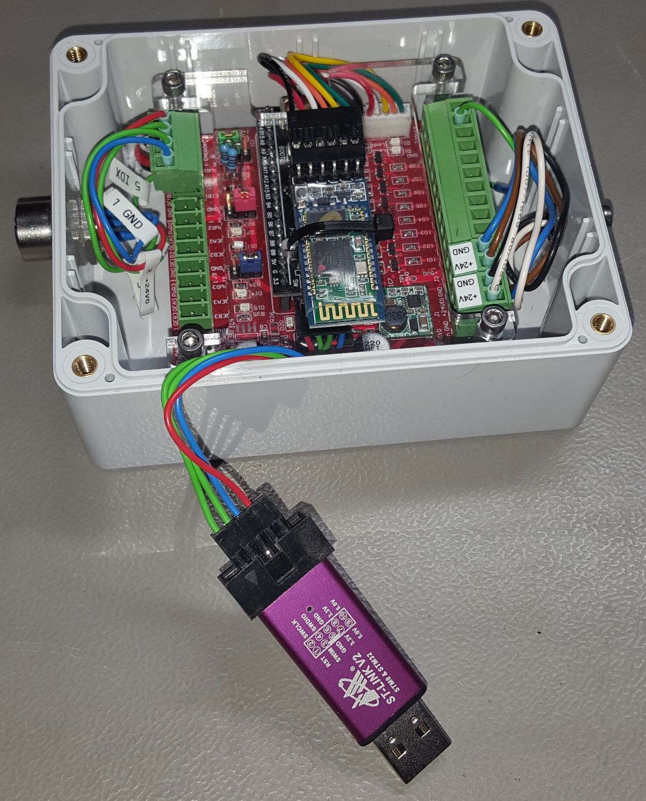
Figure 22: BlackPill I/O carrier in enclosure with JTAG debugge
Warning
Ground Loop Awareness When debugging a system connected to 24V power and a PC via USB, ensure that the ground potentials are equalized or use a USB isolator to prevent damage to the ST-Link or the PC.
Enclosure Options and Mounting
The BlackPill I/O Carrier is designed for versatility, offering two distinct mounting methods to suit different evaluation environments.
Polycarbonate enclosure (IP65)
For applications requiring protection against dust and moisture during field tests, the board is compatible with the RND 455-00184 plastic enclosure.
{kind=link}
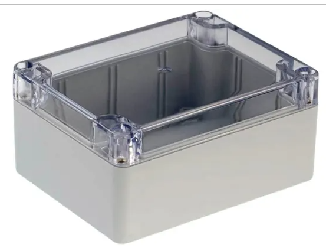
Figure 23: IP65 ABS enclosure
Dimensions: The enclosure measures 115 x 90 x 55 mm.
Connectivity: There is sufficient internal clearance to install and wire M8 and/or M12 connectors directly into the case walls.
Benefits: Using standardized circular connectors makes the installation clearer and simplifies the connection process for external sensors during evaluation.
Figure 24: BlackPill I/O carrier in IP65 ABS enclosure
DIN-Rail Mounting (Hat Rail)
For installation within experimental control cabinets, the board supports the PhoenixContact UMK-BE carrier system.
DIN-Rail Mounting and PCB Preparation
To install the board into a DIN-rail enclosure, the corners of the PCB must be removed. The layout includes pre-defined perforated break-off points for this purpose.
{kind=link}
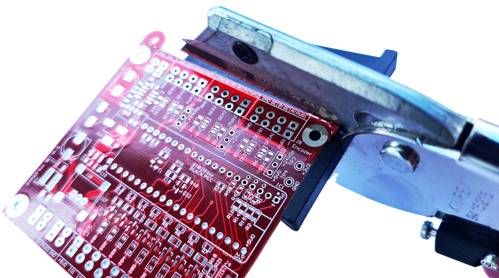
Figure 25: Removing PCB edges
However, for a cleaner finish and to avoid mechanical stress on the laminate, it is recommended to either saw off the corners or carefully clip them using a side cutter.
{kind=link}
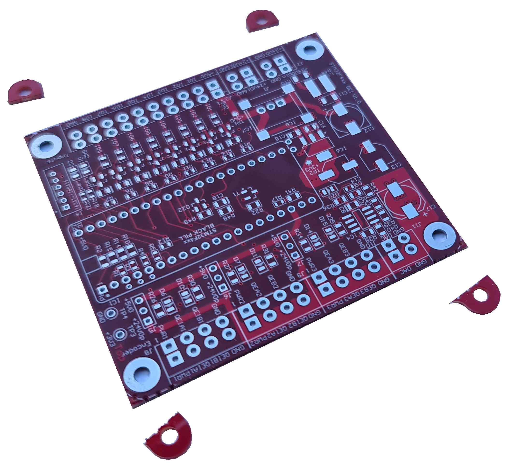
Figure 26: Removed edges for DIN-rail mounting
To ensure the PCB slides smoothly into the enclosure guide rails, the remaining edges should be slightly rounded off with a fine file.
{kind=link}
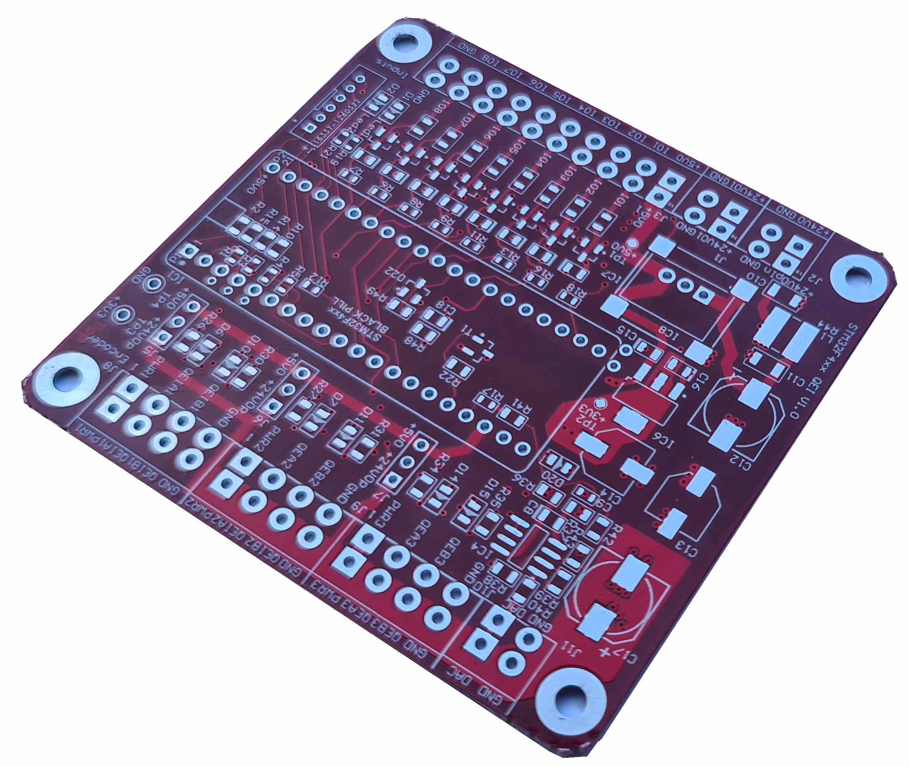
Figure 27: PCB BlackPill I/O carrier with removed edges
DIN-Rail Mounting Assembly
In this configuration, vertical MCV connectors are being utilized.
{kind=link}
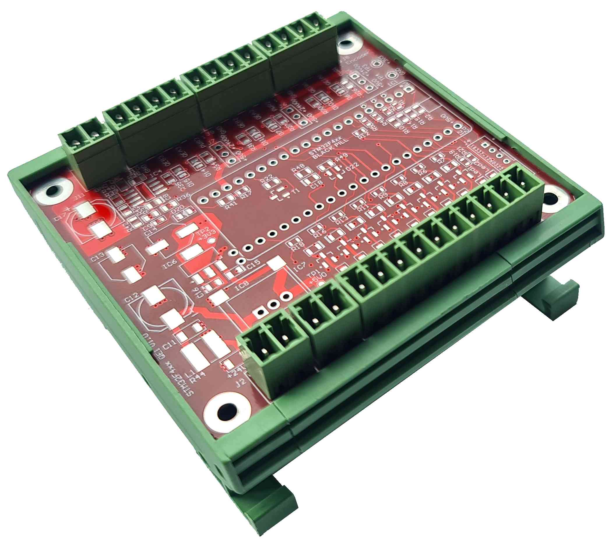
Figure 28: BalckPill I/O carrier in DIN-Rail enclosure top view
The bottom of the enclosure is equipped with two clips for snapping the unit onto the DIN rail.
{kind=link}
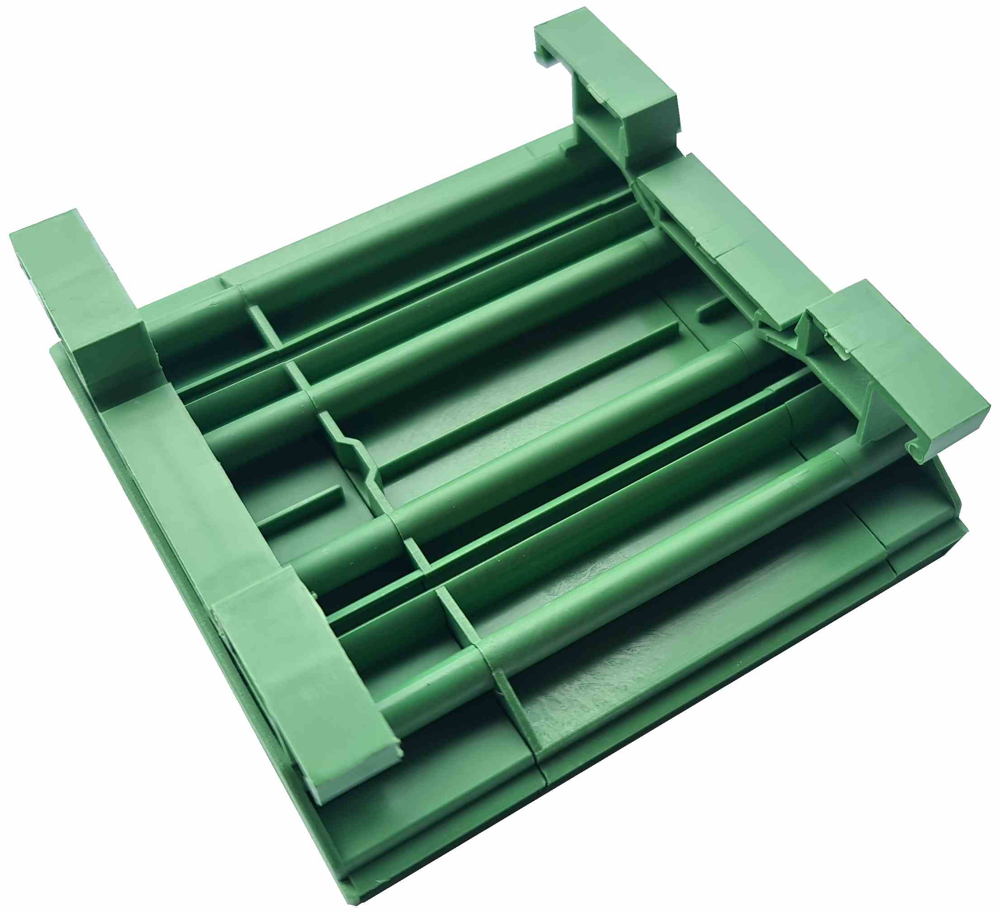
Figure 29: BlackPill I/O carrier in DIN-Rail enclosure bottom view
Bottom view DIN-Rail case.
{kind=link}
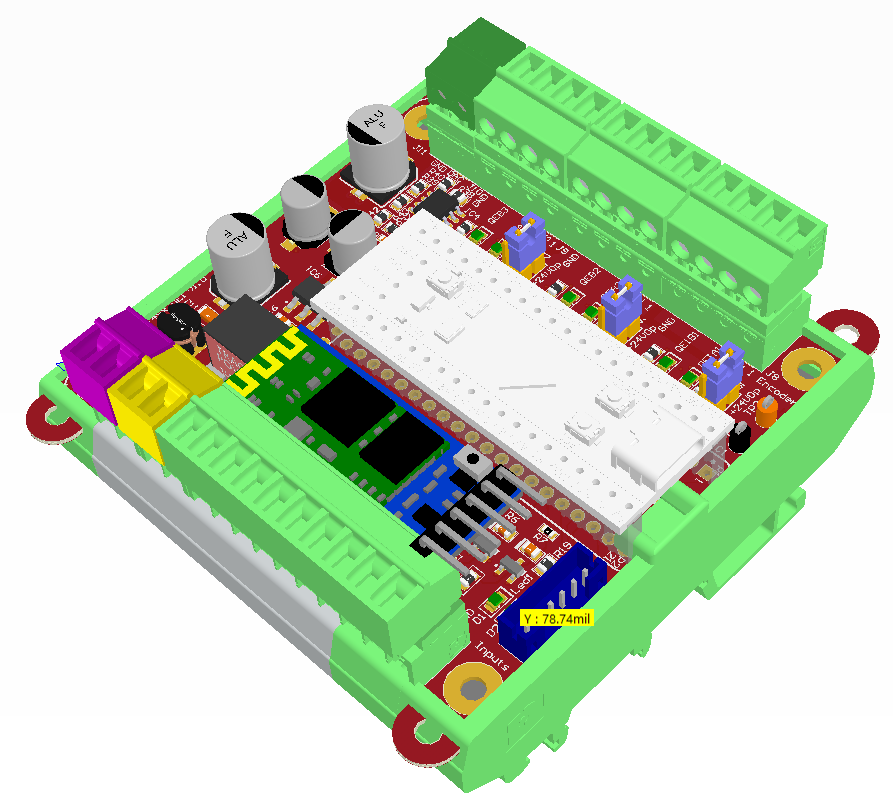
Figure 30: 3D-view BlackPill I/O carrier wit BlackPill and Bluethooth-board
Modular Adaptation: To fit the carrier system, the PCB features perforated corners that can be easily snapped off. Once the corners are removed, the board slides into the UMK-BE housing base.
Connector Configuration: When using the DIN-rail variant, it is recommended to use vertical MCV connectors. This orientation ensures easy access to all wiring terminals from the front of the assembly.
Technical Data
This section summarizes the physical dimensions, weight, and environmental constraints of the BlackPill I/O Carrier.
Dimensions and Weight
The following dimensions refer to the bare PCB without the optional enclosure.
Pos |
Parameter |
Value |
|---|---|---|
1 |
Length [l] |
76.25 mm |
2 |
Width [w] |
72 mm |
3 |
Height [h] |
25 mm |
{kind=link}
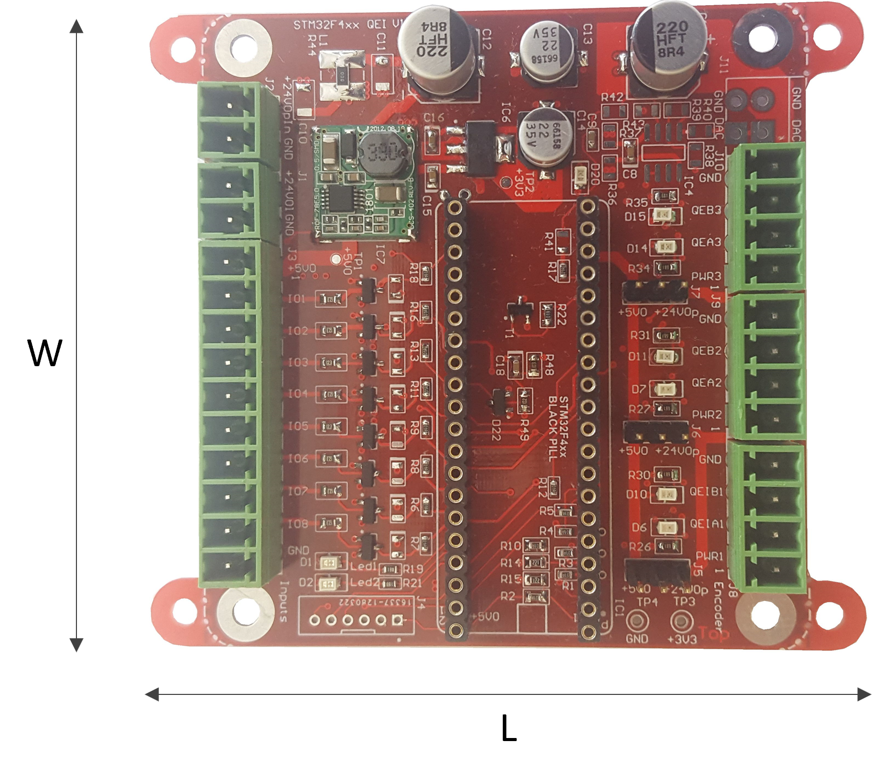
Figure 31: Dimension parameters BlackPill I/O carrier
Pos |
Description |
Value |
|---|---|---|
1 |
STM32F4xx BlackPill interface (fully assembled) |
80 g |
Dimensions including DIN-rail enclosure
When mounted in the DIN-rail enclosure, the device has a width of approximately 78 mm and a height of 83 mm. Without connectors, the enclosure extends approximately 30 mm from the bottom edge of the DIN rail.
Pos |
Parameter |
Value |
|---|---|---|
1 |
Length [l] |
78 mm |
2 |
Width [w] |
82 mm |
3 |
Height [h] |
30 mm |
Environmental Limits
Important
Development Use Only
This hardware is currently rated for development and evaluation purposes only. It is not certified for final deployment in safety-critical environments without further thermal and EMI testing.
Operating Temperature: Indoor / Laboratory conditions.
Storage: Keep in a dry, anti-static environment.
Component Assembling
{kind=link}
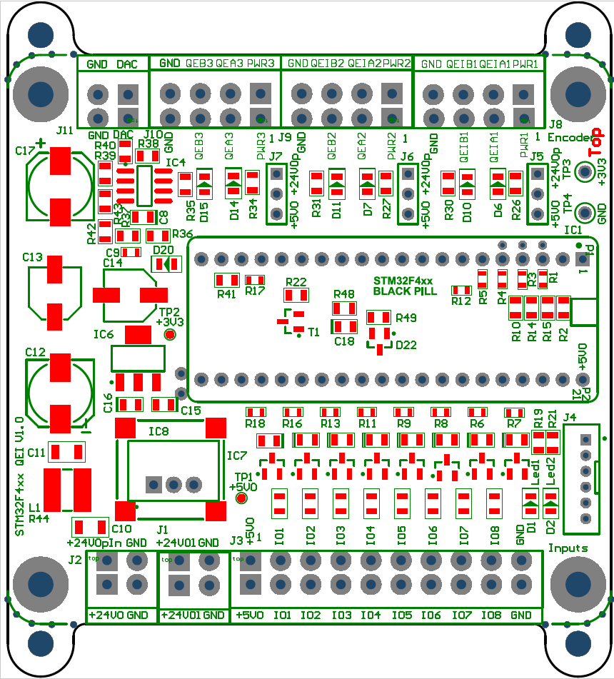
Figure 32: Top assembling BlackPill I/O carrier
EMC and Safety Notice
Important
EMC Compliance Disclaimer This board is a Development Kit for evaluation in laboratory environments. It has not undergone formal EMC testing. To improve electromagnetic behavior: - Use shielded cables for encoder and communication signals. - Ensure a low-impedance connection to the system ground. - For specific evaluation setups, mount the board in a grounded metallic enclosure.
License
This hardware is licensed under the CERN Open Hardware Licence Version 2 - Strongly Reciprocal (CERN-OHL-S).
Disclaimer
STM32F4 is a registered trademark of STMicroelectronics Corporation.